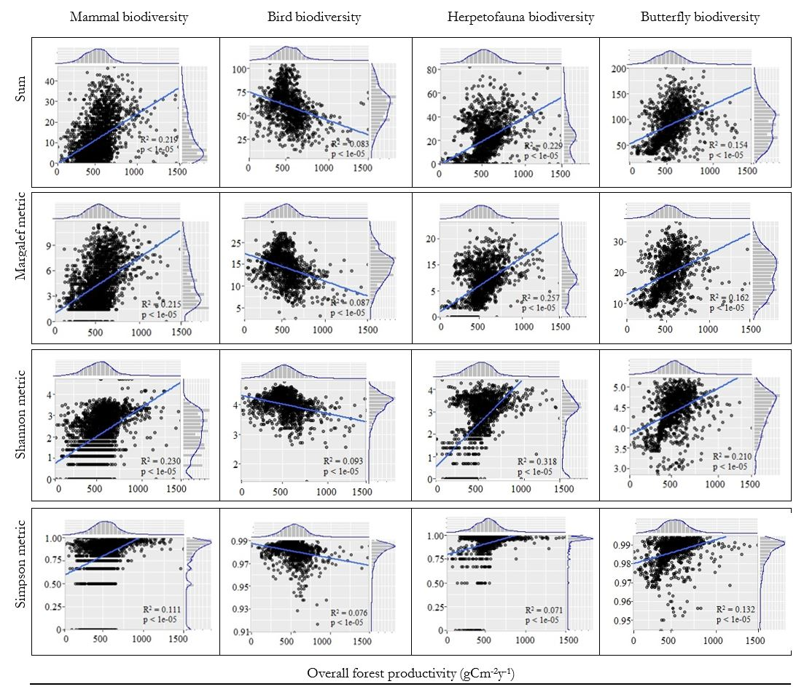
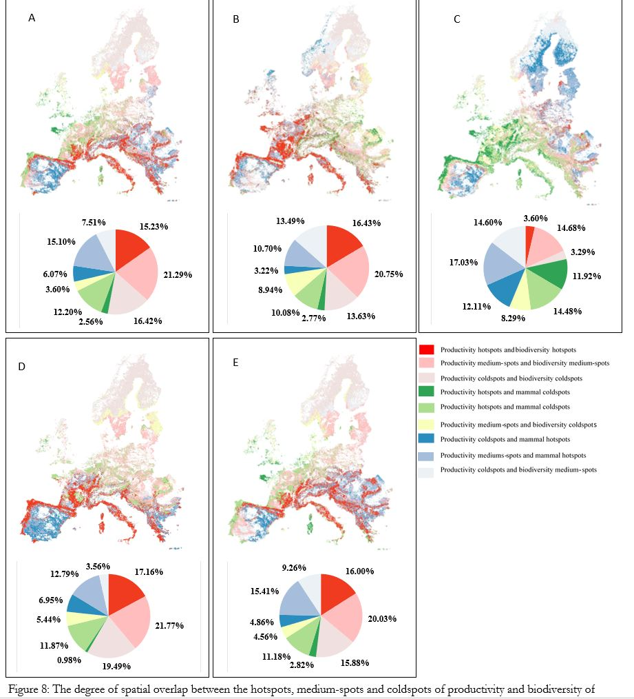
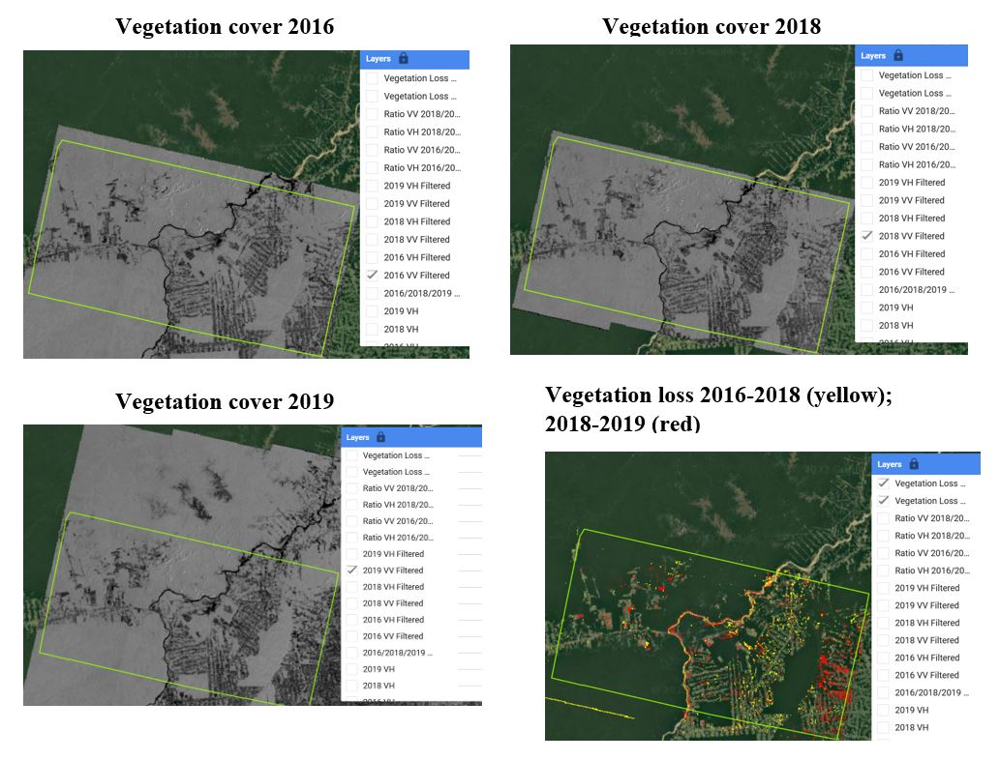

Forest resources are under threat as our human impact on the ecosystem far exceeds sutainable levels. Because of this, biodiversity is disappearing at an alarming rate. The loss of species affects the functioning and services of forest ecosystems including their potential to offset carbon and regulate climate change. I grew up with a passion to contribute my knowledge towards our understanding of sustainable management of forest resources and protection of biodiversity. By redefining our human action, and by exploring the use of geospatial technology hold promising potential of maintaining forests and ecosystem services.
My research is located at the intersect of environmental science and geospatial technology. I work with environmental data, geographical information systems and remote sensing technology to build quantitative models necessary to improve our understanding of forest ecosystems including how ecosystem services such as biodiversity and forests are distributed, and to analyse their threates. By now, I have built a reasonable network in forest and biodiversity research, reaching from my study to work. I have also built confidence on using codes to analyse forests and biodiversity problems. In 5+ years, I see myself having contributed significantly towards standardised approaches of quantifying ecosystem services and with my research making progress on managing the global pressing challenges of forest destruction and biodiversity loss.
It focused primarily on remote sensing, geographical information systems (GIS), machine learning and statistics. These subjects were embedded in the fields of forestry, biodiversity and agriculture. I trained on data collection, processing and analysis techniques. I conducted several tasks on using GIS and remote sensing data with the aid of quantitative spatial-statistical analysis to study global forest cover, land cover classification, biodiversity distribution, time-series image analysis of satellite data to study surface land changes and agricultural regeneration. I became interested in developing machine learning and statistical models based on biotic and abiotic factors to estimate biodiversity and study forests. I became more confident in using these models with data collected from satellites including optical, radar, lidar and even drones. Remote sensing data has the potential to capture forest ecosystems and species diversity of a given site, in combitation with field inventory, environmental DNA or historical observation, we can improve our understanding of 'what' occurs 'where', 'why', 'when'and 'how'.
At ITC, University of Twente, I studied with classmate from all around the world with different nationalities, backgrounds and cultures. We also lived together at the ITC hotel. We shared experiences and learned from each other a lot. Being a student of Natural Resource Management was also an adventure. We had fieldwork which ranged from visiting forests to set plots and make forest inventory and using that data to callibrate and validate the remote sensing measurements for above ground biomass, forest mapping, species identification and species distribution modelling. Having external speakers and guest lectures, visting farmers to learn about the farming systems and nitrogen quotas as students from the Natural Resources specialization, not forgeting visiting windmills, also was an interesting experience.
The main subjects of interest were remote sensing of the environment, geoinformatics, environmental modelling, forestry, biodiversity and agriculture. I was trained on work related to database magement systems. I also studied the development of global forest resources with the help of inventory techniques that combine different types of remote sensing data with field data. Biodiversity research was also the main component of my course, and I did projects on species distribution modelling. Throughout the 4 years of study, I developed skills on combining field data and remote sensing in GIS environment to study forests and biodiversity following my interest. I also mastered my coding skills that helped me break down problems and build a back-up solution. In every semester, our class had field trips which involved visiting differest ecological zones all over Kenya.
Regid Carbon is a climate technology company that uses earth observation data for landscape monitoring, reporting and verification. My tasks were embedded in spatial modelling for biomass and carbon accounting using GIS and remote sensing technology.
Digireg Netherlands BV is a spatial planning company that collects raw data and process it into usable information. My role involved detecting and digitizing buildings using aerial images, and quality control and assurance of data.
Farm Forestry Smallholders Producers Association of Kenya is an umbrella organization working with farm forestry smallholders to promote forestry production as well as improving farmers' livelihood. Here, I engaged in forest management activities that ranged from data analysis and management, to working with smallholder farmers.
Remote sensing technology provides unlimited opportunities for forestry studies such as mapping forest distribution, ecosystem services modelling, biodiversity estimation, carbon offset monitoring and natural hazard prediction. Forests in Europe are under pressure due to competing needs from wood industries and biodiversity conservation which calls upon viable strategies to maximise productivity and maintain biodiversity at the same time. This therefore requires an in-depth understanding of the spatial interaction between productivity and biodiversity.
For this purpose, I evaluated the trade-offs between productivity and biodiversity of forests in Europe. Here, I used MODIS satellite images to derive Net Primary Productivity and species distribution models for biodiversity. Biodiversity was based on species of mammals, birds, herptiles and butterflies that naturally occur in the EU-28. This biodiversity data was collected from European-wide atlases and predicted range maps. The choice of which source to use was dependent on data reliability. There was variation in terms of data availability and quality among and within taxa influencing the choice of the analytical methods. However, such methods were harmonized to arrive to distribution maps that are as comparable as possible. In my analysis, biodiversity was measured for individual groups and combined groups using classic metrics that capture different facets of biodiversity including species count, Margalef, Shannon-Wiener and Simpson indices.
The spatial analysis was based on determining productivity-biodiversity relationship using linear and logistic regression and investigating their spatial congruence using threshold criteria based in ArcGIS and R programming environment. Because the pixels were many and spatially correlated, only 2% of the total pixel were sampled (to reduce autocorrelation) forty times, and each time, coefficient of determination (R2) from the resulting model recorded which were eventually averaged to get the final R2. Note that sampling, however, had insignificant effect on the R2 not only because the results were found within the range but even after running the model on varied percentage samples or even on the whole dataset, the R2 remained within the range. However, using very small samples was avoided because it reduced the statistical significance of the model. The results showed a weakly positive relationship between productivity and biodiversity across all species groups except birds with negative relationship.
The productivity and biodiversity mapping was done using the spatial delineation method. The pixels were classified based on their values. I labled them as hotspots, mediumspots or coldspots. Productivity hotspot areas concurred minimally with biodiversity hotspot areas with a positive spatial overlap occurring accross all species groups except with birds. Results suggested that “conservation suitable” areas for birds were mainly identified in the boreal areas of Europe, while for all other species groups they were located on the Iberian peninsula and the Balkan ranges. (A. All species, B. Mammal, C. Birds, D. Herptiles and E. Butterflies)
For more information click thesis or research paper
Species distribution models (SDM's) are mainly used to explore the occurrence or absence of certain species and are linked to environmental conditions and how such species responds to changes in its environment. Modelling is based on the interpolations of observations of species over space and time using relevant explanatory variables. This is done by fitting an empirical relation between the presence or absence of a species and the variable conditions under which it occurs (it’s “niche”). I have done projects using different environmental niche models including linear modelling, logistic regression, boosted regression trees and maximum entropy.
Some of the projects I have worked on are: Modelling of endemic Iberian herptiles with a wide distribution in Andalusia province, Spain. The project aimed at determining the environmental variables that cause the decline of herptile species and to predict the viability of populations in relation to environmental changes. The models were fitted with habitat or environmental data, NDVI remote sensing and species presence data (point observations).
Another project was to evaluate the encroachment of pine forest (Pinus silvestris) at Crete Island and its impact on biodiversity. The aim was to investigate the change in pine forest. Data sources were ASTER, IKONOS, MODIS and aerial photos. There was also data from field observations that was sampled at study sites with young and old pine forests. Pine forests in Crete have been found to be affected by forest fires and abandoned cultivations. Therefore, analysis of forest fires based on burned areas and its relationship with pine encroachment was also conducted. The results were used to estimate change in biodiversity and to suggest management strategy as means to prevent future biodiversity loss or to control of forest fires.
Google Earth Engine (GEE) tool for remote sensing applications provides unparalleled access to large volumes of data through cloud computing technology. Forest cover and change monitoring is vital to improving our understanding of the role of forests in carbon sequestration and to the global carbon cycle. Many countries are signatories to international agreements such as Reducing Emissions from Deforestation and Degradation (REDD+) initiative, which involves tracking annual forest degradation and deforestation rates and developing early warning systems of forest loss. In my project, I used synthetic aperture radar (SAR) for time series analysis of forest change between 2016-2019 based on GEE.
